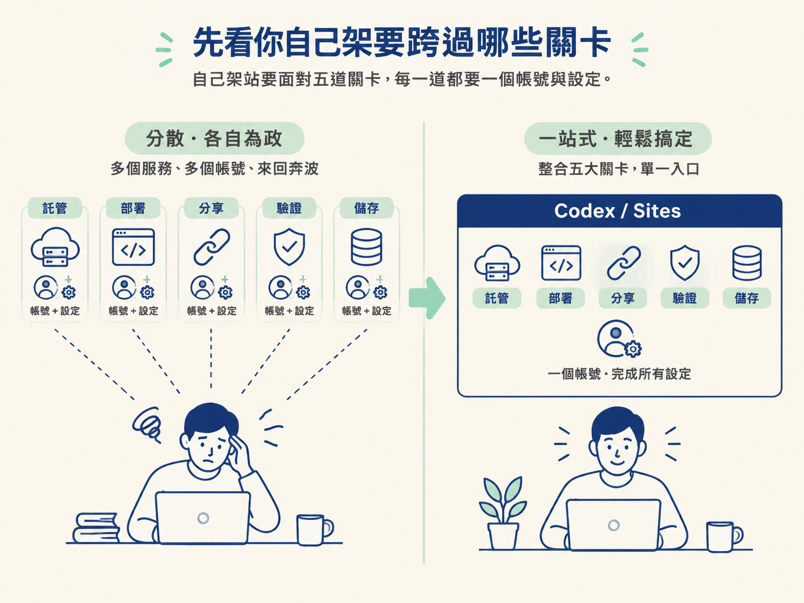
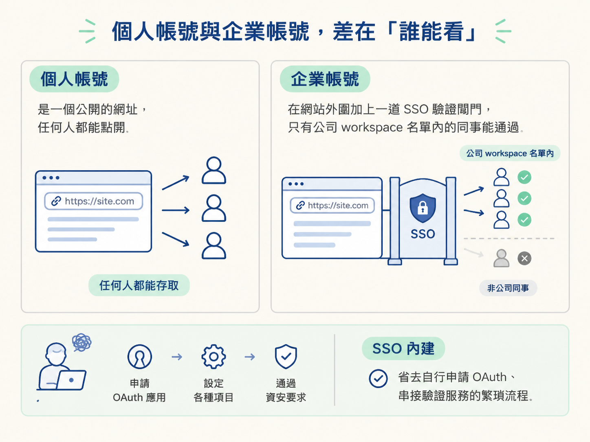
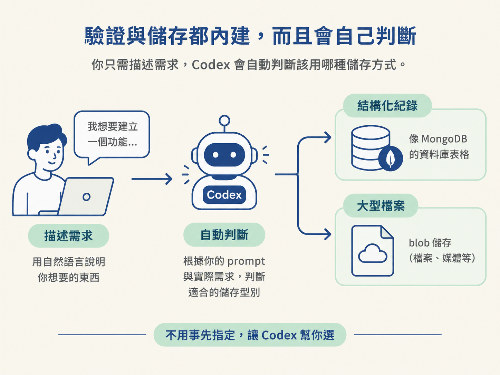

能說出 ChatGPT Sites 是什麼、它替 Codex 接手了哪些託管與驗證工作，以及使用它的帳號前提與個人／企業帳號的差異。
你可能遇過這個畫面：用 Codex 花了一個下午做出一個 landing page，在內建瀏覽器裡看起來很滿意，於是想傳給同事看。結果你卡住了：這個東西只活在你自己的電腦上，別人點不到。
接下來的事才是真正花時間的。你要去找一個主機商、開一個帳號、設定部署流程、把網址接上去。如果這個頁面只是靜態的，麻煩還算小；但只要它需要存一點資料、需要一個資料庫，或是公司希望你用 SSO 登入才能看，你就得再串上好幾個額外的服務，還要自己搞懂設定。
這一課要講的，就是這個卡住的地方。ChatGPT Sites 把「從你手上的東西，到別人點得到的網址」這整段路，收進了 Codex 裡面。先弄清楚它到底接手了哪些事，你後面才有辦法判斷什麼時候該用它。
如果不用 Sites，從一個做好了的頁面到公開上線，通常會經過好幾關。這些關卡個個都不難，難的是它們各自要一個帳號、一份設定，而且彼此要接得起來。
| 關卡 | 你要自己處理的事 |
|---|---|
| 託管 | 找一個地方放檔案，而且要讓它 24 小時開著 |
| 部署 | 每次改東西就把新版推上去，最好還能留下舊版 |
| 分享 | 決定誰能打開這個網址：全世界，還是只有某些人 |
| 驗證 | 需要使用者登入時，自己串一個登入服務 |
| 儲存 | 頁面要記住任何東西，就得準備資料庫或檔案儲存空間 |
你可以把這想像成要在家裡辦一場聚會。場地、桌椅、餐點、音響，每樣都可以自己張羅，但你就得多跑好幾個地方、跟好幾個廠商打交道。Sites 像是把這些都包成一站的方案：你只要把人邀來就好。

ChatGPT Sites 的定位，是讓你直接從 Codex 託管應用程式。它幫你處理部署、幫你處理分享、幫你處理儲存與驗證，你不需要另外去用一個獨立的服務。換句話說，前面那五關（託管、部署、分享、驗證、儲存）Sites 都接了下來。
這裡的關鍵是「不必離開 Codex」。你不是先在 Codex 寫好，再跳到另一個平台完成上線，而是從頭到尾都在同一個地方，跟同一個助理講話。網站做好之後，直接跟 Codex 說「用 Sites 把這個網站部署出去」，它就會處理後面的事。
而且 Sites 不限定你的起點。它的起點有兩種：一種是你從一個 prompt 開始，請 Codex 從零建一個網站；另一種是你已經有一個專案，把它匯入，然後轉換成一個 site。整個過程不需要你先去學一套全新的部署流程。
要使用 Sites，你需要一個 ChatGPT 帳號，而且至少是 Plus 等級。免費方案可以試用模型，但發佈 Sites 需要 Plus 以上；新的帳號有時候會拿到一段免費的 Plus 期間。在公開測試（public beta）期間，Plus 方案上的 Sites 是不限量的；它的定價還在變動，尚未定案。
把這點放在心上，是因為它會影響你的第一步。如果你打算跟著練習把東西部署出去，先確認自己手上的方案至少是 Plus，否則你會卡在最後一步發佈。
Sites 的存取方式，取決於你用的是哪一種帳號。兩者的差別可以一句話概括：個人帳號決定的是「要不要公開」，企業帳號決定的是「公司裡的誰能看」。
| 個人帳號 | 企業帳號 | |
|---|---|---|
| 存取範圍 | 可以設成公開，網際網路上任何人都能看 | 多一層權限控制 |
| 登入驗證 | 看需求自行決定 | 內建 SSO，可沿用公司的 SSO 做驗證 |
| 人員名單 | 無 | 可把同事或 workspace 裡既有的團隊群組，直接加進有權限的名單 |
這裡有個容易被忽略的重點：對企業來說，SSO 驗證出了名地難做。平常要做一個只有同事能看的內部工具，你得申請一個 OAuth 應用、設定一堆東西、再通過公司的資安要求。Sites 把 SSO 內建起來，等於省掉了這一整段。

至於個人使用者，情況要說清楚一點：如果你只想讓網站公開，外面其實有很多選項能部署，Sites 不是唯一解。它真正省事的地方，是當你需要儲存與登入的時候。
Sites 內建的不只 SSO，還有 ChatGPT identity：需要登入時，使用者可以直接用他們的 ChatGPT 帳號登入。如果你在做一個公開網站，只是希望使用者有個帳號能存進度，他們就可以用 ChatGPT 帳號來做這件事。當然，如果你想用自己的驗證供應商，Sites 也允許你帶進來。
儲存同樣內建，而且分成兩種：一種放結構化的紀錄（例如像 MongoDB 那樣的資料庫），另一種放大型檔案（blob 儲存）。
最體貼的地方在於，你不需要事先告訴 Codex「我要一個 blob 儲存」或「我要一個結構化資料庫」。它會依據你的 prompt 與實際要建的東西，自己判斷該用哪一種。這跟前面講的機制是同一個思路：你描述你要什麼，細節由 Codex 接手。

ChatGPT Sites 讓你直接從 Codex 託管應用程式，把部署、分享、儲存與驗證一併接手，你不需要另外找一個服務供應商。它可以從一個 prompt 開始，也可以匯入既有專案再轉成 site，但發佈至少需要 ChatGPT Plus。個人帳號可以公開分享；企業帳號則多了內建的 SSO 與 workspace 群組存取，驗證與儲存也都不必自己串。
把 Sites 掛回你原本的工具鏈看，它佔的位置是「上線那一段」：前面的 Codex 負責把東西做出來，後面的部署、分享、驗證、儲存交給 Sites。搞懂了它接手哪些事，下一步才有意義：實際上要怎麼把一個 prompt 或既有專案，變成一個真的有網址、別人點得到的網站？下一課會把它拆成幾個可以照著做的動作，從建立、發佈，到編輯與重新部署。